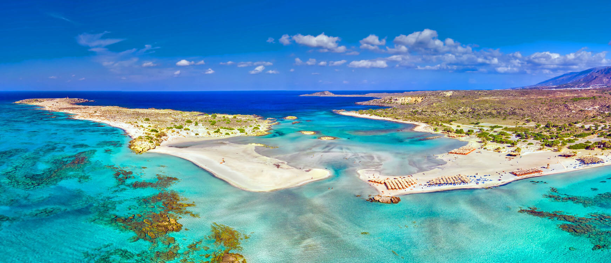

Learn more about Crete and book a stay here
Crete is the largest island in Greece, and the fifth largest one in the Mediterranean Sea. Here, you can admire the remnants of brilliant civilizations, explore glorious beaches, impressive mountainscapes, fertile valleys and steep gorges, and become part of the island’s rich gastronomic culture. Crete is, after all, a small universe teeming with beauties and treasures that you will probably need a lifetime to uncover!
The island’s endless coastline features numerous beaches, most of which are sandy. Balos, Falasarna and Elafonisi are three beaches of great beauty in the region of Chania. Within a short distance from Heraklion you will find Amnissos, Agia Pelagia, Kaloi Limenes, Malia, Limenas Chersonisou, Ammoudara beaches. Don’t miss out on visiting Matala beach known since the sixties and seventies as a hotspot for hippies who travelled there from all over the world.
Crete is an island that can offer many a thrill to action-loving travellers by the sea or on the mountain. Hike through its ravines, enjoy your off-road rides in the mainland, follow the trekking routes – the landscapes crossed by the E4 European trail are amazing; enjoy water sports activities such as sailing, diving, sea kayaking and windsurfing.